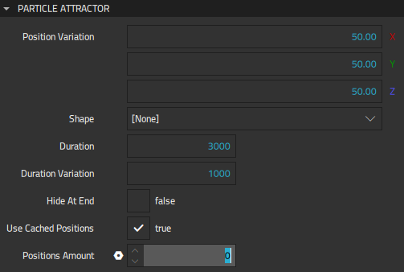
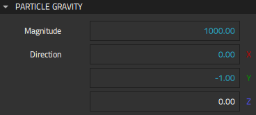
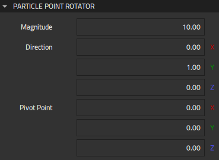
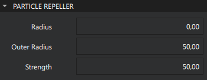
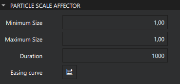
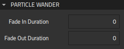
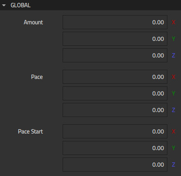
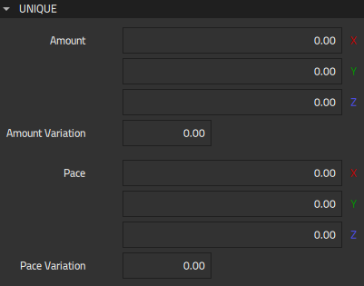
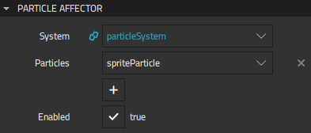

Particle Affectors
Affectors are an optional component of a particle system. They can perform a variety of manipulations to the simulation, such as altering the trajectory of particles or prematurely ending their life in the simulation. For performance reasons, it is recommended not to use affectors in high-volume particle systems.
The following affector components control how the particles are animated during their lifetime:
- Attractor attracts particles towards a specific point.
- Gravity accelerates particles to a vector of the specified magnitude in the specified direction.
- Point Rotator rotates particles around a pivot point.
- Repeller repels particles from its location.
- Scale Affector scales particles based on its lifetime and other parameters.
- Wander applies random wave curves to particles.
If the system has multiple affectors, the order of affectors may result in different outcome, as affectors are applied one after another.
By default, affectors affect all particles in the system, but you can limit this to the particles listed in Properties > Particle Affector > Particles.
Attractor
The Attractor component attracts particles towards a position inside the View 3D component instance. To model the gravity of a massive object whose center of gravity is far away, use an instance of the Gravity component.
The attraction position is defined either by using the position of the attractor and the value of Position variation or by selecting an instance of the Particle Shape or Model Shape component in Shape. If both position and shape are defined, the shape is used.
Specify settings for Attractor components in Properties > Particle Attractor.

Position variation specifies the variation on attract position. Instead of attracting particles into a single point, it attracts them randomly towards a wider area. For example, to attract particles into some random point inside a (50, 50, 50) cube at position (100, 0, 0) within 2 to 4 seconds, set X, Y, and Z to 50.00, Duration to 3000, and Duration variation to 1000.
In Shape, select an instance of the Particle Shape or Model Shape component to attract particles into a random position inside the shape. When the shape is defined, it is visualized in the 3D view.
Duration specifies the duration in milliseconds that it takes for particles to reach the attraction position. When the value is -1, Particle Emitter > Life span is used as the duration. If you specify Duration variation, the actual duration to reach the attractor is between duration minus duration variation and duration plus duration variation.
Select Hide at end to make the particle disappear when it reaches the attractor.
Select Use cached positions to cache possible positions within the attractor's Shape. Cached positions give less random results but are better for performance.
Positions amount specifies the amount of possible positions stored within the attractor's Shape. By default, the amount equals the particle count, but you can specify a lower amount for a smaller cache. Specify a higher amount for additional randomization.
Gravity
The Gravity component models the gravity of a massive object whose center of gravity is far away, and thus the gravitational pull is effectively constant across the scene. To model the gravity of an object near or inside the scene, use an Attractor component instance.
Specify settings for Gravity component instances in Properties > Particle Gravity.

Magnitude defines the magnitude in particle position change in degrees per second. A negative value accelerates in the opposite way from the direction specified in Direction. Direction X, Y, and Z values are automatically normalized to a unit vector.
Point Rotator
The Point Rotator component rotates particles around the pivot point specified in Pivot point towards the direction specified in Direction. Direction X, Y, and Z values are automatically normalized to a unit vector.
Specify settings for Point Rotator component instances in Properties > Point Rotator.

Magnitude defines the magnitude in particle position change in degrees per second. A negative value accelerates in the opposite way from the direction specified in Direction.
Repeller
The Repeller component repels particles from its location.
Specify settings for Repeller component instances in Properties > Particle Repeller.

Outer Radius defines the outer radius of the repeller. The particle is not affected until it enters this radius and the repel strength grows smoothly until the particle reaches Radius.
Radius defines the inner radius of the repeller. Particles located inside Radius are repelled at full strength.
Strength defines the strength of the repeller.
Scale Affector
Scale Affector scales particles based on their lifetime and other parameters.

Minimum Size defines the minimum size that the affector can scale particles to.
Maximum Size defines the maximum size that the affector can scale particles to.
Duration defines the duration of the scaling cycle in milliseconds.
Easing Curve defines the easing curve for the scaling animation.
Wander
The Wander component applies random wave curves to particles. Curves can combine global values that are the same for all particles and unique values that differ randomly.
Specify settings for Wander component instances in Properties > Particle Wander.

Fade in duration specifies the duration in milliseconds for fading in the affector. After this duration, the wandering will be in full effect. Setting this value can be useful to emit from a specific position or shape, otherwise wander will affect the position also at the beginning.
Fade out duration specifies the duration in milliseconds for fading out the affector. Setting this value can be useful to reduce the wander when the particle life time ends, for example when combined with an instance of the Attractor component so that the end positions will match the shape.
Global Wander Properties
Specify global settings for Wander component instances in Properties > Global.

Amount specifies the distance that each particle moves at the ends of curves. For example, if you set the value of X to 100.00, Y to 10.00, and Z to 0.00, all particles wander between (100, 10, 0) and (-100, -10, 0).
Pace defines the frequency at which each particle wanders in curves per second, starting from Pace start. The meaningful range for pace start is between 0 .. 2 * PI.
Unique Wander Properties
Specify unique settings for the Wander component instances in Properties > Unique.

Amount specifies the distance that each particle moves at the ends of curves. Specify amount variation for each particle between 0.00 and 1.00 in Amount variation. When the amount variation is 0.00, all particles reach the maximum amount. When it is 0.50, every particle reaches between 0.50 and 1.50 of the amount. For example, if you set Amount X to 100.00, Y to 50.00, and Z to 20.00) and Amount variation to 0.10, the particles' maximum wave distances are something random between (110, 55, 22) and (90, 45, 18).
Pace defines the frequency at which each particle wanders in curves per second. Specify unique pace variation for each particle between 0.00 and 1.00 in Pace variation. When the variation is 0.00, all particles wander at the same frequency. For example, if you set Pace X to 1.00, Y to 2.00, and Z to 4.00 and Pace variation to 0.50, the particles' wave paces are something random between (2.00, 4.00, 8.00) and (0.50, 1.00, 2.00).
Particle Affector
Specify common settings for particle affectors in Properties > Particle Affector.

If the affector is not a direct child component of the particle system, select the Particle System component instance to affect in System.
To only affect some of the particles in the particle system, select them in Particles. Select  to add logical particles to the list.
to add logical particles to the list.
Deselect Enabled to turn the affector off. Usually, this property is used in code to conditionally turn affectors off and on.